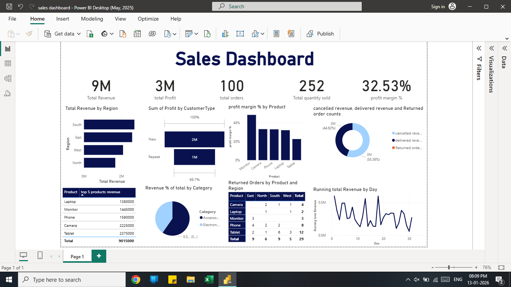
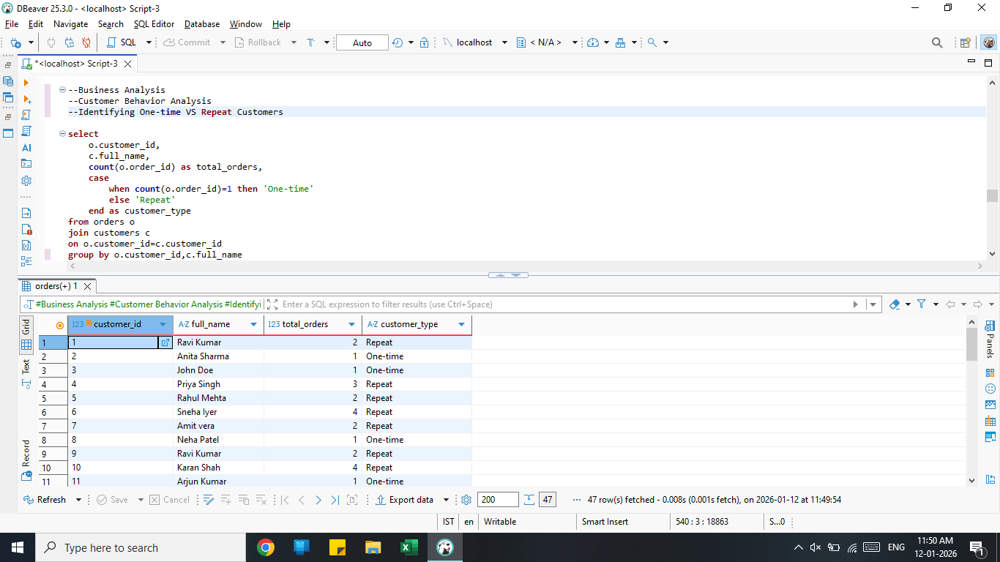
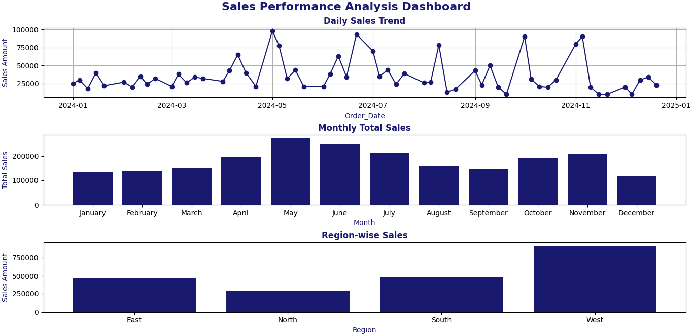

Professional Summary
Detail-oriented Data Analyst with a strong academic background in Physics and hands-on experience in
SQL, Power BI, Python, and Excel. Skilled in data cleaning, analysis, and visualization to derive meaningful
business insights. Actively building real-world projects and dashboards, with a strong interest in data-driven decision-making.
Skills
Data Analysis & Visualization
- SQL (Joins, Subqueries, CTEs, Window Functions)
- Power BI (DAX, Power Query, Interactive Dashboards)
- Python (Pandas, NumPy, Matplotlib)
- Microsoft Excel (Pivot Tables, VLOOKUP / XLOOKUP)
Other Skills
- Data Cleaning & Transformation
- Exploratory Data Analysis (EDA)
- Business Insights & Reporting
- Basic Statistics & Analytical Thinking
Projects
Sales & Revenue Analysis Dashboard – Power BI

- Designed an interactive Power BI dashboard to analyze sales, revenue, and customer trends
- Used Power Query for data cleaning and transformation
- Created calculated measures using DAX to track KPIs
- Improved data readability using charts, slicers, and filters
Order Management Analysis – SQL

- Built and analyzed relational tables such as orders, payments, and order status history
- Used JOINs, Subqueries, CTEs, LEAD/LAG, and Window Functions to track order lifecycle
- Identified order delays, payment status patterns, and customer behavior
Data Analysis Using Python (Pandas & Matplotlib)

- Performed data cleaning and manipulation using Pandas
- Conducted exploratory data analysis to identify trends and outliers
- Created visualizations using Matplotlib for actionable insights
Education
M.Sc. Physics
Navarasam Arts and Science College for Women, Erode
2021 – 2023 | CGPA: 9.1 (91%)
B.Sc. Physics
Navarasam Arts and Science College for Women, Erode
2018 – 2021 | CGPA: 8.9 (89%)